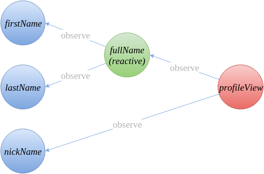
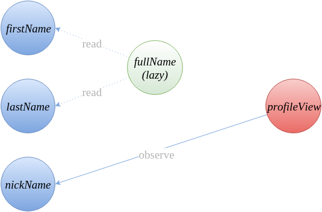
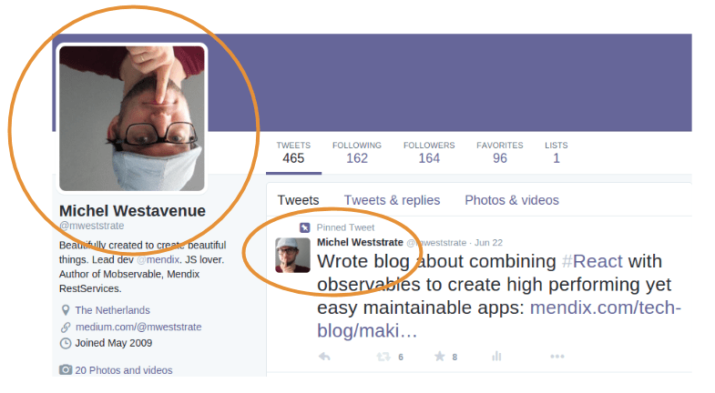
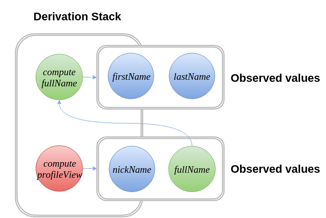
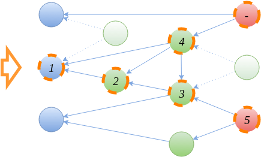

【翻译】终极响应式编程：深入探究 MobX

鉴于广大人民群众的要求（并为了到时候能给我的孙子吹个 NB），我写了这篇 MobX 的内部工作原理。许多朋友震惊于 MobX 的性能和一致性，但请各位放心，这里没有什么黑科技！
首先让我们定义 MobX 里的一些核心概念：
- 可观测状态（Observable State）任何可以被变异（mutate）且可作为计算值来源的值都是状态。MobX 可以使大多数类型的值（基本类型、数组、类、对象等）甚至引用（以及循环引用）自动变成可观测的。
- 计算值（Computed Values）任何可以通过使用这样一种函数计算的值都可称为计算值：该函数仅仅对其他的可观测值进行运算。小到字符串拼接，大到衍生出（derive）复杂对象的图形化和可视化。由于计算值本身是可观察的，因此可观测状态甚至可以衍生出完整的用户界面。计算值可能会延迟求值，或在对状态改变做出响应时求值。
- 响应（Reactions） 响应与计算值有点相似，但计算值会产生一个新值，响应会产生一个副作用。响应是响应式编程与命令式编程之间的桥梁，如打印到控制台、进行网络请求、逐渐更新 React 组件树以更新 DOM 等。
- 行为（Actions）行为是修改状态的主要手段，行为不是对状态变化做出的响应，而是更改可观测状态的来源，例如用户事件、传入的 web-socket 链接等。
计算值和响应在本文的其余部分都被称作衍生。说了这么多，可能听起来都有点太学术了，让我们举个栗子吧！在电子表格中，有值的单元格都是可观测状态；公式和图标是可从数据单元格和其他公式推导出的计算值；在屏幕上绘制数据单元格、公式的输出结果就是一个响应；对数据单元格或公式的修改就是一次行为。
总之，这里有一个使用了 MobX 和 React 的小例子，展示了上面全部的四种概念：
class Person { |
我们可以根据上面的代码绘制一个依赖树，直观看来如下所示：

这个应用的状态会被蓝色的可观测属性捕获，绿色的计算值 fullName 可从状态里通过观测 firstName 和 lastName 自动被衍生（derived）。类似地，ProfileView 的渲染可以从 nickName 和 fullName 中衍生。ProfileVIew 将会响应状态的变化并产生一个副作用：更新 React 组件树。
MobX 最低程度地定义依赖树。例如，一旦被渲染的人拥有一个 nickName，渲染将不再受到 fullName、firstName 或 lastName 输出值的影响（见代码 1）。所有这些值的观测关系可被清除，MobX 会响应地自动简化依赖树：

MobX 将始终尝试减少产生一致状态所需要的计算数。在本文的余下内容，我将介绍几个用于实现这一目标的几个策略。但在深入了解计算值和响应与状态保持同步的黑魔法之前，让我们先描述下 MobX 背后的原理：
对状态改变做出响应，总是比直接处理状态改变要好
自动更新应用的状态是一个反模式，数据应该被衍生。
应用程序触发的用来响应状态变化的任何命令式行为通常都会创建或改变某些值。换句话说，大多数行为都会管理一个本地缓存。触发用户界面的更新？更新级联的值？通知后端？这些通常被认为是潜在的缓存失效。为了确保这些缓存同步，你需要订阅（subscribe）将来的状态更改，这会导致行为再次被触发。
但是使用订阅（或者叫游标、镜头、选择器、连接器等）都有一个根本的问题：随着应用程序复杂度的加深，你在管理这些订阅时可能会出现错误：要么出现超额订阅（指订阅了一个不再在 component 中使用的值或 store），要么出现失效订阅（指忘记监听更新导致一些不易察觉的数据过期的 bug）。
换句话说，当人为管理订阅时，你的应用最终会出现不一致性。

上面的图片是一个展示 Twitter UI 不一致的很好的例子，我在 Reactive 2015 talk 中解释过，只有两种情况可能会导致这一点：要么是推文的模块没有订阅对应用户信息的改变，要么是数据正常且推文的作者甚至不与当前登录的用户关联，尽管事实上两者都尝试描述同一人的相同属性。
像 Flux 那种类型的 store 粗粒度的订阅方式很容易触发超额订阅。在使用 React 的时候，你可以简单的通过打印浪费的渲染以很快的检测到你的组件是否超额订阅。MobX 会把浪费渲染的次数降到 0。这个理念简单却违反直觉：更多的订阅导致更少的重复计算。MobX 帮你管理成千上万的观测者，你可以有效地平衡内存和 CPU 轮转。
请注意超额订阅也会以一种非常微妙的方式存在。如果你订阅的数据确实在被使用，但不是在所有条件下都被使用（指不是在所有的分支语句中都被使用），那么这仍然算是超额订阅。例如如果 ProfileView 组件订阅了 fullName 的变化，但这个人有 nickName，这就超额订阅了（见代码 1）。所以说在 MobX 设计思想的背后有一个很重要的原则就是：
只有在运行时确定订阅，才能实现最小的、一致的订阅集合。
MobX 背后的第二个重要思想就是，对于任何复杂度超过 TodoMVC 的应用，我们通常都需要一个数据图表用来存储状态，而非标准化的树，这也是一种比较费脑子但是高效的方式。图允许引用的一致性、避免数据复制，因此可以保证衍生的数据永不过时。
MobX 是如何保证所有的衍生有效且一致
解决方案就是：不缓存，只衍生。大家可能会问：这样搞不是代价很大么？不不不，事实上这样搞效率很高！原因其实上面已经解释过：MobX 并不运行所有的衍生，但能保证仅在一些响应中设计的计算值保持与可观测状态的同步。这种衍生被称作 reactive。再用电子表格的类比解释下：只有那些当前可见的公式或者一个间接使用的可见公式，在某个被观察的数据单元格发生数值变化时才需要重新计算。
惰性求值还是响应式求值
那么不是使用直接或间接的响应来计算呢？你仍然可以随时检查计算值（如 fullName）的值。解决方案很简单：只要计算值不是可响应的，它就会惰性求值，正如普通的 getter 函数一样。不进行任何观察的惰性衍生可以在超出范围时简单的进行垃圾回收。还记得计算值应该始终是可观察应用状态的纯函数这一说法吗？原因就是：对于纯函数无所谓惰性还是非惰性求值；对于同样的可观测状态纯函数的求值总会得出相同的结果。
运行计算
响应与计算值都被 MobX 用同样的方式运行。当重新计算触发时，回调函数会被推入衍生栈（当前正在运行衍生的函数栈）。只要重计算运行中，所有被访问的可观察对象将会把自己注册为衍生栈最顶部函数的依赖。如果计算值的值被衍生函数需要，且计算值已处在响应状态，那么这个值可以简单的被当做是最后一个值。否则它将把自身推入衍生栈，切换到响应模式并也开始计算。

计算完成后，我们会获得执行时访问的可观察列表。在 ProfileView 的例子里，这个列表仅包含 nickName 属性，或 nickName 和 fullName 属性。这一列表将会与前一个可观察列表进行比对。任何被移除的项将会被取消观察（计算值在这时候可能会从响应状态回退到惰性模式），任何添加的可观察这将会被观察知道下一次计算。例如 firstName 在将来发生改变，MobX 会知道 fullName 需要重新计算。这反过来将导致 ProfileView 被重新计算。下一个图标详细说明了这一过程。
传播（Propagating）状态变化

衍生将对状态变化自动做出响应。所有的响应都同步发生，且更重要的是十分稳定（glitch-free）。当可观察值被修改时，执行如下算法：
- 可观察值向它的观察者发出一个过期通知（stale notification），表明它已过期。任何受影响的计算值将会递归地把这个通知传递给他们的观察者。因此依赖树的一部分将被标记为过期。在图 5 中的依赖树例子中，在值 1 发生变化时，将会过期的的观察者被橙色的虚线边框标记。这些衍生都是可能被变化的值所影响的。
- 在发送过期通知和存储新值后，一个就绪通知（ready notification）将被发送。这个消息也表明值确实发生了改变。
- 一旦一个衍生收到了在第一步中每一个过期通知来源发来的就绪通知，他就知道观察值已稳定，并将开始重新计算。对就绪/过期消息的记录将确保这一点。例如计算值 4 仅会在值 3 过期之后才会重新计算。
- 如果没有就绪消息表明值发生了改变，那衍生将简单的告诉它的观察者自己已经重新就绪了，却不改变自己的值。否则将重新计算并发送一个就绪消息给自己的观察者。这会导致如图 5 所示的计算顺序。需要注意的是最后后一个响应（被标记为 -）在计算值 4 重新求值却没有产生新值的情况下不会进行求值。
上面两段总结了可观察值和衍生之间在运行时的依赖关系，以及值的变化是如何在衍生之间传播的。现在你应该明白了一个响应基本上就是一个总是处在响应状态下的计算值。重要的是要意识到这种算法可以不用闭包，只需要用一堆指针数组便可有效实现。此外，MobX 还应用了一些本文没有讲述的其他的优化方式。
同步执行
大家经常对 MobX 的同步运行感到吃惊（这一点像 RxJs 而不像 knockout）。这样有两个很大的优点：首先这样一直观察过期的衍生变得基本不可能，因此一个衍生值在影响他的值发生变化时可以被立即使用；其次折让堆栈追从和调试变得更容易，因为它避免了 Promise/async 库中常见的的无效堆栈。
transaction(() => { |
然而，同步执行也引入了对事务的需要。如果立即连续应用一些变化，更好的做法是在所有改变被应用之后对所有衍生重新求值。将所有行为包裹在事务（transcation）中可以实现这一点。事务简单的退出所有就绪通知知道事务块完成。注意事务仍然同步的运行和更新。
本文总结了 MobX 大多数基本的实现细节。我们还没有涵盖所有的东西，但这也便于你去理解，例如组合计算值。通过组合可响应的计算，甚至可以将一个数据图表自动转化为另一个数据图表，并利用最小数量的补丁（patches）将衍生值保持一致。也可以轻松实现例如 map-reduce、使用不可变数据进行状态追踪、横向数据加载等复杂模式。更多的内容请听下回分解。
太长不看
- 复杂应用程序的状态最好使用图形来表示，以实现引用一致性，并保持最接近问题本身的抽象模型。
- 不应该使用手动定义的订阅或游标来对状态的变化才去命令式的反应。这将不可避免的导致问题最终导致失效或超额订阅。
- 使用运行时分析来决定观察者 → 可观察对象之间关系的最小可能集合。这导致了计算模型可以在没有观察到过期值的情况下确保最少量的衍生。
- 任何不需要实现主动副作用的衍生都可以被完全的优化掉。